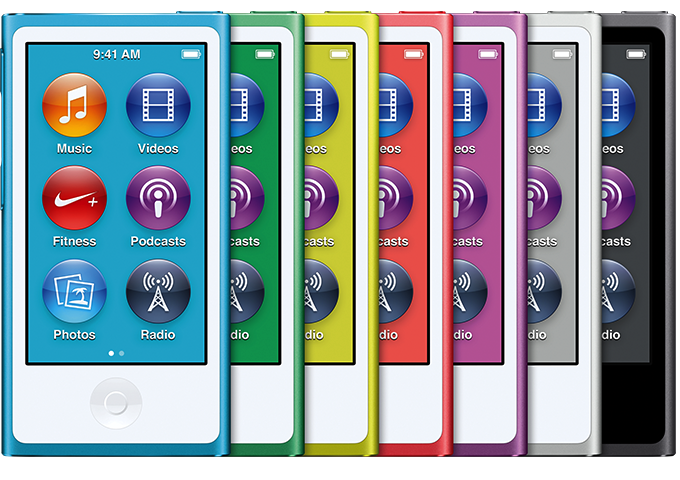
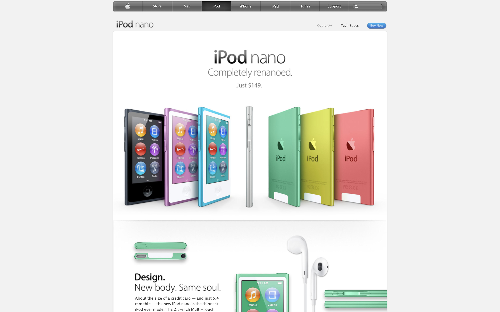

Completely renanoed.
About the size of a credit card — and just 5.4 mm thin — the new iPod nano is the thinnest iPod ever made. The 2.5-inch Multi-Touch display is nearly twice as big as the display on the previous iPod nano, so you can see more of the music, photos, and videos you love. Buttons let you quickly play, pause, change songs, or adjust the volume. The smooth new anodized aluminum design makes iPod nano feel as good as it sounds. And iPod nano wouldn’t be iPod nano without gorgeous, hard-to-choose-from colors.
 